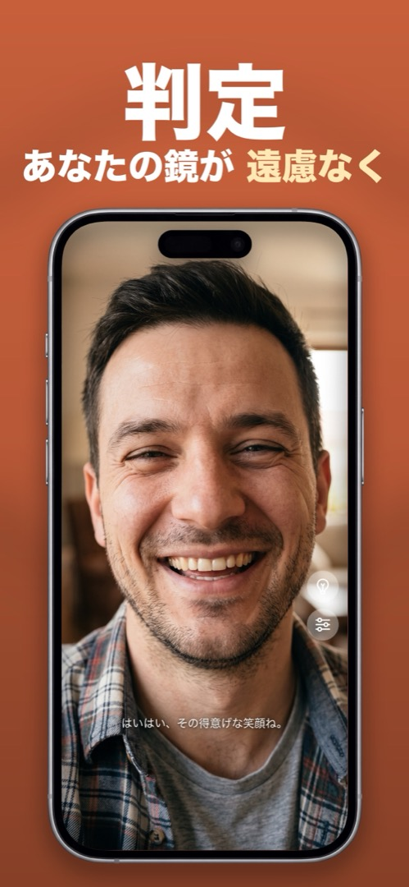

iPhoneに標準の鏡アプリはある？
結論から言うと、ありません。iOSにはカメラ、FaceTime、拡大鏡が入っていますが、「鏡」というアプリは設定にもホーム画面にもどこにもありません。みんなが代わりに試すもの、それぞれが妥協である理由、そして本物が欲しいときに入れるべきものを紹介します。
まず試されるもの
カメラアプリ（自撮りモード）
標準の鏡に最も近い存在。ちらっと見るには使えますが、これは撮影するためのもので、覗き込むためのものではありません。シャッターは親指の下、画面は操作ボタンだらけ、輝度は最大にならず、実際に撮影しなければ顔を照らす手段もありません。
FaceTimeの自分の映像
通話を始めると、小さなプレビューに自分の顔が映ります。小さいうえに、プレビューと相手に見える向きが一致せず、使うには通話を始めなければなりません。鏡ではありません。
拡大鏡
背面カメラで小さい文字を読むには最高です。フロントカメラに切り替えることもできますが、文字向けにチューニングされています——強いコントラストフィルター、検出のオーバーレイ、鏡らしい挙動はなし。
コントロールセンターの「画面ミラーリング」
多くの検索がここでつまずきます。画面ミラーリングはAirPlayのこと。iPhoneの画面をテレビやMacに映す機能で、自分の顔を見ることとは何の関係もありません。
本物の鏡アプリは何が違うのか
鏡アプリも同じフロントカメラを使いますが、それをガラスの鏡のように振る舞わせます。全画面、常に鏡像、輝度は最大に固定、暗い部屋用のリングライト、細部用のズーム、そして何より、シャッターがなく何も記録されない。この最後の点こそ、カメラではなく専用アプリを使う価値です。髪をチェックするたびに写真を生み出さずに済むのですから。
Mirrorlyでのやり方
その隙間を埋めるのがMirrorlyです。iPhoneに足りない鏡として使うには：
- App StoreからMirrorlyをインストール。求められるのはカメラへのアクセスだけ——アカウントも写真ライブラリも位置情報も不要です。
- 開けば、すでに最大輝度の全画面ミラーが目の前に。
- 電球ボタンでリングライト、ピンチかスライダーでズーム、スライダーアイコンで設定。
- 終わったらアプリを閉じるだけ。何も保存されず、カメラはオフになります。

MirrorlyはApp Storeで無料で試せます。 リングライト・ズーム・最大輝度を備えた、iPhoneの全画面ミラー。3回まで無料、その後は一回限りの購入。サブスクなし、写真の保存なし、アカウント不要、広告なし。